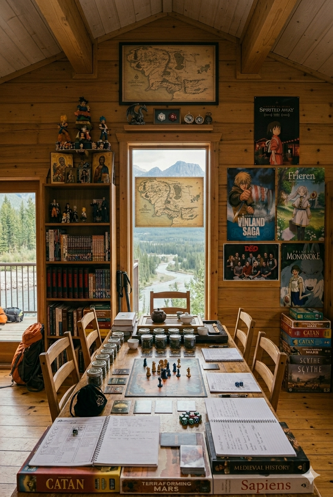

Más allá de mi perfil profesional en el ámbito de la tecnología, tengo una amplia variedad de intereses personales que forman parte de quién soy. Disfruto profundamente del contacto con la naturaleza, especialmente en la montaña y los ríos, donde actividades como el trekking y el kayak me permiten encontrar equilibrio y tranquilidad.
También me interesan distintas formas de cultura y entretenimiento, como los boardgames, los juegos de rol y las historias presentes en el anime, el manga y los manhwas, que estimulan la imaginación y el pensamiento estratégico.
Entre mis otras pasiones se encuentran el mundo del té, la historia y la teología, áreas que despiertan mi curiosidad intelectual y mi interés por comprender diferentes tradiciones y perspectivas del mundo.
Estos intereses, junto con mi dimensión espiritual, forman una parte importante de mi identidad personal. Son aspectos que enriquecen mi mirada, mi sensibilidad y mi forma de conectar con los demás y con el mundo.